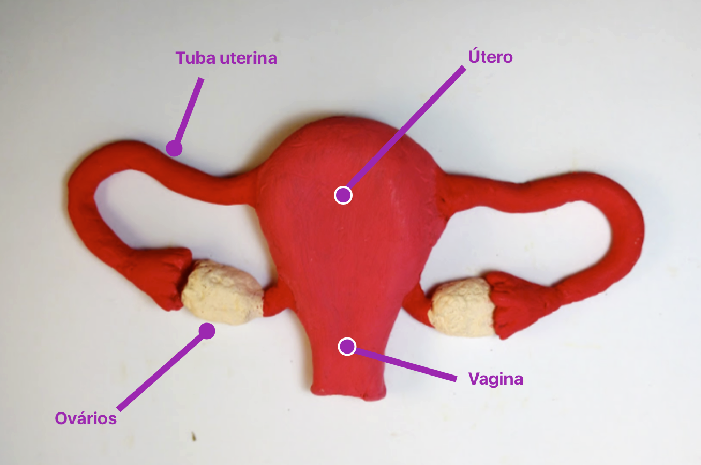

Sistema Genital Feminino
Esse sistema não é essencial à vida, no entanto é fundamental para a perpetuação da espécie.

Introdução
Componentes
Ovário
Tuba uterina
Útero
Vagina
Vulva
Introdução

O sistema genital feminino (ver figura 13) está relacionado à reprodução e se torna funcional na puberdade. Esse sistema não é essencial à vida, no entanto é fundamental para a perpetuação da espécie. Apresentam órgãos encarregados da produção de óvulos e hormônios sexuais, e depois da fecundação dos óvulos pelos espermatozóides, oferecem condições para o desenvolvimento embrionário até o nascimento do novo ser. Este sistema é formado pelos ovários, tubas uterinas, útero, vagina e a vulva (genitália externa).

Ovário
Tem formato de amêndoas e entre 2 e 4 cm, se situa na parede lateral da cavidade pélvica. É a gônada feminina e responsável pela produção e liberação de óvulos e hormônios sexuais (estrôgenos e progesterona).
Tuba uterina
Têm comprimento de 10 a 12 cm. É o local onde ocorre a fecundação. Apresenta quatro divisões: O infundíbulo, a âmpola, o ístmo.
Útero
É considerado o órgão da gestação e possui entre 7 a 8 cm. Está dividido em fundo do útero, corpo do útero e colo do útero.
Vagina
A vagina possui cerca de 8 a 10 cm de comprimento, tem como função ser o canal da cópula, canal da menstruação e canal do parto.
Vulva
Separada pela região adutora da coxa por um sulco. A parte rica em pêlos é chamada de monte púbico). Partindo deste monte, observa-se duas largas pregas chamadas de lábios maiores, com face externa coberta de pêlos e face interna lisa com glândulas sebáceas. Entre os lábios maiores, observamos outras duas pregas: os lábios menores, que são pregas desprovidas de gorduras e sem pêlos. No vestíbulo da vagina (região delimitada pelos lábios menores), encontramos dois orifícios: o óstio da uretra (mais anterior e menor) e o óstio vaginal (mais posterior e maior). Superior ao óstio da uretra encontra-se o clitóris que é uma estrutura semelhante ao pênis.